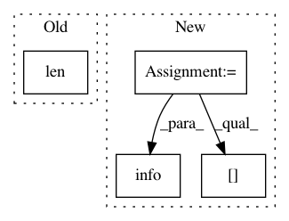

f31ee84bfdc6dc2325c8890412a965e509074d0a,streaming/python/runtime/transfer.py,DataReader,__init__,#DataReader#Any#Any#Any#,282
Before Change
]
creation_parameters = ChannelCreationParametersBuilder()
creation_parameters.build_input_queue_parameters(from_actors)
py_seq_ids = [0 for _ in range(len(input_channels))]
py_msg_ids = [0 for _ in range(len(input_channels))]
timer_interval = int(conf.get(Config.TIMER_INTERVAL_MS, -1))
is_recreate = bool(conf.get(Config.IS_RECREATE, False))
After Change
py_input_channels, creation_parameters.get_parameters(),
py_msg_ids, timer_interval, config_bytes, is_mock)
self.__creation_status = {}
for q, status in queues_creation_status.items():
self.__creation_status[q] = ChannelCreationStatus(status)
logger.info("create DataReader succeed, creation_status={}".format(
self.__creation_status))
def read(self, timeout_millis):
Read data from channel
Args:
In pattern: SUPERPATTERN
Frequency: 3
Non-data size: 4
Instances
Project Name: ray-project/ray
Commit Name: f31ee84bfdc6dc2325c8890412a965e509074d0a
Time: 2020-09-05
Author: wlx65005@gmail.com
File Name: streaming/python/runtime/transfer.py
Class Name: DataReader
Method Name: __init__
Project Name: hanxiao/bert-as-service
Commit Name: b274db161929f34024c254dc5b78603abbeb855a
Time: 2018-11-15
Author: hanhxiao@tencent.com
File Name: service/server.py
Class Name: BertSink
Method Name: run
Project Name: ray-project/ray
Commit Name: 1b1466748f1db72835a594d73d502e9787e080a9
Time: 2020-09-04
Author: wlx65005@gmail.com
File Name: streaming/python/runtime/transfer.py
Class Name: DataReader
Method Name: __init__